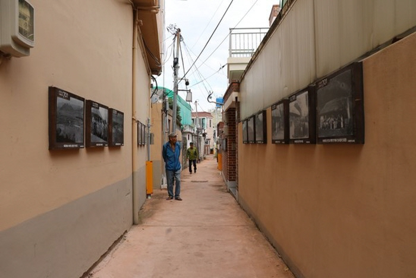

순천 향동

지역 : 전남 순천
설명 : 과거 순천부읍성의 흔적을 중심으로, 문화유적과 예술이 어우러져 재탄생된 700년의 골목길. 서문안내소를 시작으로 옥천서원까지 옥천을 따라 여러 문화재들과 좁은 골목을 구경하는 소박한 즐거움이 한가득.
웹사이트 링크 1:
http://naver.me/GNKcvWJW
웹사이트 링크 2:
https://goo.gl/maps/XCv77h8kXdbYfhk98